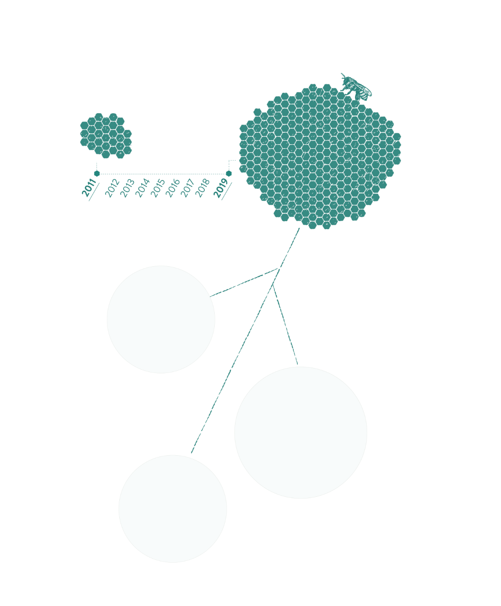
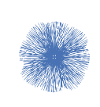
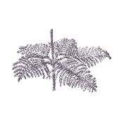

of partners say that of partners say that addressing the Grand Challenges is an organizational priority and their work is currently contributing to addressing them.

TABLE OF
CONTENTS
CONTENTS
-
 Introduction
Introduction -
 How to use this field guide
How to use this field guide -
STRATEGY 1 Build a Coalition
-
STRATEGY 2 Understand,
Identify and FIND Focus -
STRATEGY 3 Support People to Work
Together -
STRATEGY 4 Avoid Recreating
the Wheel -
STRATEGY 5 Mobilize Problem Solving
-
STRATEGY 6 Sustain Efforts
over the Long Haul -
 Stumbles and Learnings
Stumbles and Learnings -
 Looking Beyond 2021
Looking Beyond 2021 -
 Gratitude
Gratitude
FIELD GUIDE
FOR CATALYZING
CHANGE
Introduction
Here at 100Kin10, we’ve spent the last eight years working to prepare 100,000 excellent STEM teachers. Each year, we share our progress and learnings with the entire 100Kin10 network of the best STEM and education organizations, teacher leaders and other experts, but this moment called for something different.
This year, we are sharing stories of how people have come together to make real change in their communities and the strategies that have made these stories possible. Behind each story is a roadmap to how systems operate, how networks cohere and nourish trust, how people learn from each other, how teams solve seemingly intractable problems, and how change happens in an increasingly complex world.

We are far from figuring this out and still have so much to learn, but we’ve spent years honing these strategies and use them every day. We are sharing what we’ve learned with you so that you can build off of it and teach us from your experience, and so we can inspire each other in the ongoing task of catalyzing change that matters. We hope you will combine, add and build upon these strategies and share your own. There is no 100Kin10 without you.
Thank you for all that you do on behalf of teachers, students, our country, and our planet.
Onward and upward,
Talia Milgrom-Elcott
HOW TO USE THIS FIELD GUIDE
While this is our “annual report” it’s really a cross between a collection of shorts and a how-to manual: a mix of narratives, numbers, and most of all, a practical, hands-on guide for making change. Each chapter shares a key strategy, methods of implementation, and stories of what these strategies look like in action, from the perspective of partners in the 100Kin10 network who are working on the challenges underlying the STEM teacher shortage.

Systems don’t operate nor do they change in a linear fashion. These strategies don’t work in isolation. They build on and reinforce each other to make lasting change possible. We hope this guide is of use to you as you address the systemic and quotidian challenges you confront in your work.
BUILD A COALITION
Inspire Action with A Big Goal
Introduction
One of the central challenges of catalyzing change that lasts is that even seemingly isolated or discrete efforts exist inside of systems that are vast and complex. How do you get traction on a problem that’s so big it’s hard to grasp? You start at the end, with an audacious goal. The goal should be larger than any individual could ever reach on their own, yet something people can imagine accomplishing if they work together. That goal can become the inspiration that drives working together differently.

We’ve learned from countless social movements that there is tremendous power in using a big goal to build a sense of shared purpose and unity. Here is our twist: Let the big goal inspire individual action, inviting diverse actors to bring their unique assets and resources to help reach the goal. The combination of big, shared purpose and individual agency has enabled us to bring together the kind of diverse coalition that real change requires. It inspires partners to believe that change is possible, helps them see themselves as part of that change, and motivates them to take the first step.
How We Implement:
100Kin10 was founded to respond to President Obama’s call in the 2011 State of the Union for 100,000 excellent STEM teachers in 10 years. Over the past eight years we’ve used this big goal to attract hundreds of partners to join our effort. But we’re not merely trying to get partners to “sign on” to our goal. We ask them to commit to action to achieve it and to make it part of their organization’s goals.
The result is 100Kin10’s network, a multifaceted collection of institutions and their leaders, each contributing toward a goal that no single entity could reach on its own.

We’ve grown from a network of less than 30 to over 300

Our network is
more than 10 times
the size it was when
we started
50 new partners joined our effort in 2019
300+ organizations, representing a total of 584 individuals contributing

More than 80,000 new and excellent STEM teachers have been prepared
Over 5 million students
have been impacted by our
work in 2019 alone


Inspiring Action Through
Co-ownership and Commitments
We ask partners to identify how they can contribute to reaching our big shared goal, helping partners see themselves as one small but integral piece of a broader coalition. In doing this, we are inspiring partners to become co-owners of and active partners in reaching the big goal our whole network is working toward.
In total, partners have made over 500 commitments to ending the STEM teacher shortage, and in 2019 alone, 138 partners have made new commitments or renewed commitments.
A few examples of the commitments partners
have made in 2019:
1.
WeTeach_CS at UT Austin will recruit and certify 150 educators in high school computer science and train 100 educators and administrators in strategies for broadening participation in computer science.
2.
Colorado Education Initiative will support and train 200 educators in leadership practices to design, test, and scale change ideas in ways that promote school-wide redesign and inform district system conditions.
3.
Chicago Public Schools will support at least 75 teachers in taking the elementary mathematics specialist coursework to expand their expertise in the teaching learning of early mathematics


“It all happened because of 100Kin10…”
In 2012, the School of Education at Rider University created a new STEM-focused teacher residency program, and Dr. Sharon Sherman, former Dean, who supported the development of the program, says “it all happened because of our participation with 100Kin10.” The residency program enables college grads of all backgrounds to earn a K-6 teaching certificate through an innovative 9-month residency where participants work in schools while receiving direct mentorship and completing a series of math and science courses online once the residency ends. According to Sherman, “It was the connections we made and the funding we accessed through the 100Kin10 network that inspired us to make that program happen.”
The program was so successful that it led to a partnership with the US Satellite Laboratory and the creation of the Endeavor STEM Certificate Project, which enables teachers to earn a STEM teaching certificate by completing five online graduate courses, now available to teachers throughout the country. Sherman explained that it was the conversations she had at 100Kin10 events and the people she met that pushed her to create the program. But the impact goes beyond a single program, Sherman said that throughout her ten years as Dean, she was constantly invigorated by new ideas and inspired by connections with STEM thought leaders through her involvement in 100Kin10. As she put it, “I wouldn’t be the Dean that I was if it wasn’t for 100Kin10.”
The Impact of Inspiration:
Our partners tell us that the 100Kin10 network inspired them personally and inspired their organization’s work and commitments:


0%
of partners say they feel inspired by participation in 100Kin10 to stay focused on their STEM teaching work
0%
of partners took action in their work as a result of participating in 100Kin10 network
0%
of partners have spent time outside of 100Kin10-organized opportunities doing work that is inspired by participation in the 100Kin10 network
“[This organization] is so unlike any other I’ve been a part of! It makes me believe that together we truly can make a difference and make change - 100Kin10 gives me hope!”
Media and Visibility
We work hard to get national visibility and recognition for the urgency of solving the STEM teacher shortage and for the accomplishments of the network. In doing so, partners see that their work is valued and are reminded that their individual efforts are part of a broad coalition of partners working toward change for the entire field of STEM Education.
Executive Director Talia Milgrom-Elcott continued her column in Forbes, highlighting issues in STEM education, publishing a total of 22 articles in 2019, with 59,351 total views.
Generated over 17 Million impressions on Twitter
Increased Twitter followers
by 40%
6,400 total followers
20 media pieces published in
2019 about 100Kin10
UNDERSTAND,
IDENTIFY AND
FIND FOCUS:
Find the Points of Highest Leverage
Strategy
Systems problems are too complex and interconnected to be solved by any single individual or organization, or even understood from any singular vantage point. Yet most of us take action on whatever piece of the challenge we can see, ignoring the equally important parts that others are experiencing. Is it any surprise, then, that our individual efforts, as strong as they are, rarely lead to the kind of change that lasts?
At some point in the life of a network of shared purpose, it is essential to create a shared understanding of the challenge space. With that map, not only does everyone gain insights about their work, but it becomes easier to find allies, examples of what’s worked (and what hasn’t), and adjacent issues that must be addressed together and to pinpoint as a community the most strategic places to focus.
That knowledge is the key to moving beyond filling gaps in the system and instead addressing the root causes that produced those gaps in the first place.
How We Implement:
We spent years working closely with the entire network of partners and thousands of teachers and other experts, asking their perspectives on why it is so hard to get and keep great teachers, especially in STEM. Ultimately we identified more than 115 challenges underlying the persistent STEM teacher shortage. Together, we call them our Grand Challenges.
Then, with the help of 750 teachers and other education leaders, we mapped the connections between them, generating over 35,000 data points that helped us trace the structure of the system. Finally, we partnered with complexity mapping scientists to help us run simulations on that data over 1,000 times, building a detailed picture of a deeply interconnected system.
With that map and an unprecedented understanding of the interdependent nature of the challenges in STEM education, we’ve been able to identify leverage points or “Catalysts” for change across the system. The Grand Challenges and Catalysts have resonated so deeply with 100Kin10 partners that 94% of partners in the network have now made them organizational priorities.
Grand Challenges Adopted to Meet Local Needs
In 2015, Tom Peters, Executive Director of the South Carolina Coalition for Mathematics & Science (SCCMS), was working on developing a strategic plan for STEM education in South Carolina when he attended a STEMx conference and heard 100Kin10’s Talia Milgrom-Elcott speak about the Grand Challenges in STEM. With a background in science and ecology, Peters was fascinated by the ecosystem approach to understanding STEM challenges, and before long, he and his colleagues adopted the Grand Challenge framework for their work in South Carolina.
Partnering with 100Kin10, SCCMS hosted an unconference that brought together leaders to examine state-wide STEM challenges from an ecosystem approach. With 100Kin10’s support designing and facilitating the unconference, participants from across the state were able to recognize a common need to address the value and perception of STEM education in South Carolina and identify five key challenges to focus on. After the unconference, SCCMS was able to distill everything they’d learned in the South Carolina STEM Grand Challenges, which they shared publicly during STEM Education Day at the State Capitol.
Peters explained that through the Grand Challenge approach, SCCMS “staked a claim about priorities that is more invitational, accessible, and actionable than a typical strategic plan,” and the results are a clear indication this is true. The five challenges SCCMS and its partners identified have been adopted by the South Carolina Coordinating Council for Workforce Development, and the state’s STEM Education Day has evolved into STEM Education Month, including new grant programs and awards for teachers. SCCMS has also grown its partnership network, helped curate new STEM-focused frameworks for the SC Department of Commerce, and is developing and piloting a STEM Teacher Leader program to build capacity and increase teacher retention in rural communities in South Carolina.
Understanding
Leads to Commitment
By helping partners understand the problem at the macro level, we have been able to work together to also identify the most effective ways to align their individual efforts. Regardless of their context or scale of work, an understanding of the big picture helps partners find ways to contribute the resources they have to our nationwide effort.
0%
“Creating a structure that provides insight into the complex ecosystem of STEM education is truly an innovation that will have long-lasting impact on our field. The vision and design of your efforts is truly elegant.”
0
partners made 360 new commitments aligned to the Grand Challenges in 2019
“The Grand Challenges offer a great framework to integrate meaningful research and best practices into this ongoing conversation, but to also build new knowledge and agency within school communities across one of the largest school systems in the US.”
104,963
Pageviews in 2019 alone of our website that details all the grand challenges in STEM education


A Brief History of a STEM Ecosystem in Pennsylvania
“In Pennsylvania, we are focused on career readiness pathways to support our growing workforce demands, and STEM is a big part of that picture. Job trends, job growth, projections over the next decade, they all tell us that if we don’t better align K-12 with high-quality STEM education, we’re not going to have the workforce ready for the jobs of the future. So the question is: how do we do that?
The Governor and Secretary of Education understand the importance of STEM and have been pushing to create a regional community of practice to find ways to work across the state on goals and projects together, a STEM ecosystem. The idea is creating a network of cross-sector partners, from libraries to government agencies to science museums, all with the goal of improving STEM education for students. This is not new, there are over 80 STEM ecosystems across the country, and similar to 100Kin10, the idea is about building a network of people engaged in this work to support STEM education.
When we started our STEM ecosystem in Pennsylvania, we gathered at the Capital and identified that our most critical need is fostering the next generation of innovators and entrepreneurs, and the first step in order to think about how to do that is an asset map. We knew about the 100Kin10 Grand Challenges map, and we used that same framework for thinking through our challenges in Pennsylvania. We’ve already built a working version of our very own map called the ENGINE Influencers Map. By identifying all the community organizations across Central Pennsylvania that are working on STEM issues, we’re gaining a deeper understanding of what’s possible in our region by mapping the landscape and making that information available to everyone who’s already doing this work. Not only did the Grand Challenges provide the inspiration for how we could think about mapping our assets, but it also provided a framework that we’re implementing at the regional level. This couldn’t have happened without 100Kin10.”
Amanda J. Smith, M. Ed,Executive Director, ENGINE of Central PA
STEM Outreach & Engagement Liaison, Penn State Center for Science and the Schools

SUPPORT
SUPPORT
PEOPLE TO WORK
TOGETHER:
Build Trust and Connections
The Strategy:
Creating the conditions for a diverse group of people to work together requires fostering trust; without it, there can be no vulnerability, and without vulnerability, it is impossible to honestly share what we need to learn or cannot do on our own.
People need time and space to make connections and build the kinds of relationships that can drive long-term collaboration. Building trust often requires more work on the front end, but it pays off in the long run by enabling collaboration and cooperation to flow much more easily across a network. We have come to say the speed of a network is trust.
Building those relationships means not only bringing together partners working on similar efforts, but also convening unlikely allies who can connect across sectors and geographies to build on each other’s work and advance our collective goals.

How We Implement:
At 100Kin10, we have developed a set of tools to help build trust amongst partners through large gatherings, small-group convenings, and 1-on-1 opportunities.

Finding Exactly Who You’re Looking For
The Professional Development team at the California Science Center had been brainstorming for a few months, trying to determine if they should incorporate math into their NGSS trainings. Then they read 100Kin10’s “Doing the Math Report,” which got them interested in learning more, so they participated in the Foundational Math Workshop. Through the conversations and activities that day, they found the reasons they were looking for that math was an important part of the broader challenges they’re working to address, and connected with new partners who could help them take the next steps.
Soon after, they were able to connect with UCLA’s Mathematics Project and find opportunities to train their Professional Development team in Cognitive Guided Instruction (CGI) Math. The California Science Center now has plans to incorporate CGI Math into both their summer trainings and their NGSS trainings. Elena Lopez, the Science Center’s Professional Learning Manager, explained that the most valuable part of their participation in 100Kin10 has been the opportunity to connect with organizations that had knowledge and experience in exactly what they were looking for. “Don’t be afraid to pursue a collaboration. You really don’t know what may come out of it.”
Annual Summit
97% of Summit attendees connected with new partners or allies
Summit is our inspirational national convening that connects partners from across the
country and builds the trust they need to engage in knowledge sharing and plant the seeds for
collaborative problem-solving.
237 attendees at Summit
representing 132 orgs
“Summit was incredibly inspirational, and allowed me to think about how networking with a
group of STEM professionals can revolutionize teaching. I am eager to see what an even bigger difference
I can make in STEM education on a regional, national, and global scale.”
Collaboration Grants
100% of Summit attendees connected
with new
partners or allies
Collaboration grants are quick-turnaround grants that provide funding and support for
organizations to meet in person to explore an idea.
15 collaboration grants were awarded to 33 organizations, enabling a total
of 61 individuals to participate.
85% of grantees felt that collaboration grants were the highest impact
100Kin10 opportunity that they had participated in this year.
1-on-1 Calls
Through 1-on-1 calls 81% of partners who participated in 1-on-1 calls connected with new
partners or allies
1-on-1 calls are personalized engagements for partners to speak directly to 100Kin10
staff, who help connect them to needed resources and other organizations working on similar challenges.
135 1-on-1 calls made to partners in 2019
Connecting to New Ideas
Through 100Kin10, staff from Chicago Public Schools (CPS), one of the largest school districts in the country, was able to connect with the University of Washington and learn about their Ambitious Science Teaching practices. Soon after, a 100Kin10 collaboration grant enabled Alissa Berg, the Science Manager for CPS, to travel to Seattle and observe firsthand some of the innovative phenomenon-based teaching strategies that were in practice there.
After returning, Berg shared these strategies with science teachers she was working with and helped form a professional learning community to support teachers in better understanding and implementing these strategies. As Berg reflected on the experience, she shared how broadly the impact has been felt. “We now have schools where every science teacher is engaging their students in figuring out how and why puzzling phenomena occur. It’s beyond exciting to see students connecting evidence from multiple sources/investigations to science ideas as they formulate in-depth explanations. The ‘aha’ moments are plentiful and never get old!”
Trust was at an all-time high:
Deep meaningful relationships that lay the groundwork for collaboration are built on trust. In 2019 trust reached an apex in the network, as did the number of connections built through our programming
93% of partners said they could bring their “whole self” to our annual Summit
93% of partners reported they felt enough trust to share vulnerabilities without filtering
“One of the powerful tactics 100Kin10 employs is connecting people, and that approach is vital to advancing learning in the field.”
84% of individuals strengthened connections with existing partners or allies
85% of individuals connected with new partners or allies

Fruitful Connections Across Regions
Through 100Kin10 webinars, Dr. Lara Smetana of Loyola University Chicago was able to find other partners collaborating with local museums on teacher preparation, motivating her and her colleagues to apply for a collaboration grant to learn more. Smetana and a graduate assistant, Jenna Carlson Sanai, were able to travel to Washington, D.C., to meet with partners from both The George Washington University and the Smithsonian Museum for Natural History. Then, in a reciprocal visit, the DC folks came to Chicago, where they learned more about Loyola University Chicago’s Cultural Institutions in Teacher Education Partnership and even attended some museum-based course field experiences. As Smetana recalled, “A number of excellent conversations were shared and we generated new ideas for Loyola and our teacher preparation program overall.”
Since then, the two partners have presented to both research and practitioner audiences at multiple conferences and continued collaborating on grant applications, along with staying in touch to share ideas on programs and research initiatives. “It’s been wonderful to have these other thought partners,” said Smetana, “I’d encourage other 100kin10 partners to take advantage of the Collaboration Grants, as it is wonderful to be able to meet in person and experience the programming and collaboration that another organization is engaged in. We were able to have rich conversations about the successes and challenges and lessons learned and also share outside perspectives to help move our efforts forward.”

AVOID
Facilitate Learning
AVOID
RECREATING
THE WHEEL:
Facilitate Learning
and Sharing
The Strategy:
Most of the problems we need to solve have been solved by someone, somewhere. Yet we rarely find the solutions we need when we need them, relegating us to start from scratch when we could be building on the shoulders of the inventions that came before. Networks with trust and many points of connection are primed to facilitate robust learning and information sharing, so that no one needs to recreate the wheel.
Bringing partners together to share insights and connect with peers working on similar challenges allows individuals to build on each other’s wisdom. Supporting information sharing not only grows the collective capacity of a network to solve complex problems, it also promotes a culture of cooperative learning, fostering close-knit communities of collaborators who inspire and motivate each other with new ideas, adaptations, and perspectives

How We Implement:
At 100Kin10, we’ve implemented this strategy on multiple scales. First, we’ve designed our programs by learning from and building on decades of research in systems change to identify the methods and approaches best suited to our network of partners. Next, we structured those programs to enable partners to do the same, helping them identify the information they need, when they need it most. Finally, we leverage the best ideas of the entire network, compiling them all in easy-to-use resources and programs so partners can find and access exactly what they need. Here are just a few ways in which we do this:
Brain Trusts: When we bring partners together to collaborate on solving challenges, we support their work by convening experts and thought leaders in the field to help them learn about the best ideas already out there. These Brain Trusts are customized to each challenge, providing insights on current research in the field, innovative methods and approaches, what’s worked and what hasn’t, helping to fuel partners with the knowledge and information they need to work on groundbreaking territory.
Workshops & Webinars: We create in-person venues and digital opportunities for partners to share ideas and knowledge directly with one another. These workshops and webinars help build connections between partners who are working on similar challenges, fostering information sharing and learning across sectors, geographies and disciplines.
Research Scout: As the backbone of a network of 300+ partners, 100Kin10 staff play a critical role in connecting the dots between partners who are working on similar issues. This year we hired a part-time research scout who gathers and synthesizes insights partners have developed across the country, as well as insights from research and literature reviews, and shares back out with everyone working on those issues.

Building on the Work of Others
Deborah Sachs first learned about the “Get the Facts Out” toolkit at the 2018 100Kin10 Summit. She was excited to see so much information about the myths and facts of teaching pulled together and organized in a single easy-to-use resource. Reflecting on how many myths there are about teachers and teaching, she thought it might be a good jumping-off point to build visibility for the University of Indianapolis’s teacher-preparation programs.
Sachs and her colleagues adapted the content and produced both a poster and a flier, highlighting the myths and facts information. The flier was used for various recruiting events, and the poster was put in buildings around campus, particularly those that host STEM coursework. But it wasn’t only future teachers that Sachs and her colleagues sought to help inform. They also presented the myths and facts at teacher conferences where they could reach current educators who interact daily with potential future teachers, helping to spread the ripple of knowledge.
“The most valuable part of this work for me and my colleagues has been the opportunity to connect with individuals who are all addressing the same challenges, allowing us to brainstorm and share ideas with people across the broad spectrum of 100Kin10 partners. It has helped to not feel so isolated in our work and to know that there is a cohesive group of people all working to improve education in many ways and at many levels,” said Sachs.

The Impact of Learning and
Information Sharing
In 2019 we heard from partners that our efforts to share information and promote learning had significant impact on their day-to-day work:
0% of partners said they tackled challenges they couldn’t have taken on alone
0% of partners said they shared expertise or insights from their own work back out with the network
0% of partners said they accessed expertise or insights that they would not have encountered otherwise
0% of partners said they learned something new in the 100Kin10 network
Cross-Sector Learning Partnerships
In 2019, California Science Center (CSC) was eager to connect with local school districts in their state to support STEM educators with their resources and expertise. At 100Kin10’s 2019 Regional Gathering, CSC was able to connect with folks from Torrance Unified School District, and a new partnership was born. CSC applied for a 100Kin10 collaboration grant to support a series of meetings to begin building new collaborations and was able to meet directly with TUSD. Ramona Chang, Director of Curriculum and Instruction at TUSD, reflected on what it’s been like for schools to build partnerships with organizations outside of the education sector.
“I have found that working with organizations such as the Science Center provides us the opportunity to see beyond the K-12 sector. Collaborations with groups outside the K-12 sector is vital for both the school district and the other organizations such as the Science Center. We all have extended our science knowledge, pedagogical knowledge, and NGSS knowledge. While we have always known that this is a vital component it has been because of 100kin10 that we have been able to expand our professional network.”
Facilitate Local Learning Networks
Regional gatherings are one of our core programs to provide time and space for organizations working in the same local context to network and learn from one another. These short convenings are low-barrier opportunities for partners to learn about inspirational work going on in their own backyard and build relationships with local organizations.
Self-Initiated Networks of Partners
In 2019, Amanda Smith and Rebecca Theobald noticed that many 100Kin10 partners, just like themselves, were working with rural schools. While many of these partners worked in different rural contexts, they often found that they faced common challenges. Smith and Theobald began thinking, “There are so many great educators and practitioners working in rural settings... how do we share everything, how can we develop a strong community of practice and ensure that we can all start with the best ideas out there?”
With the help of 100Kin10, Smith and Theobald were able to do just that, launching the first-ever 100Kin10 micro-network to bring together rural STEM practitioners from across the country. They met at Summit in 2019 and held numerous calls and virtual meet-ups to share ideas, discuss their practices, and give feedback. After the first year, Theobald says, “We’re just starting to scratch the surface and really starting to grow,” and Smith added that the rural micro-network has “built a foundation for relationships… we’re already learning so much from each other, and we’re really just starting.”
“What 100Kin10 does is connect people, they are working at this really high level… they keep everything organized and they create the structure and setting for you to thrive,” says Smith. Theobald explained that they were modeling that same behavior with the rural micro-network, “It was all the participation in 100Kin10 that led us to see how much was out there and how much we needed to connect everyone.”

MOBILIZE
PROBLEM SOLVING:
Structure and Support
Collaborative Action
The Strategy:
To solve challenges in a way that can stick, multiple players, from multiple perspectives and contexts and bringing their diverse expertise to bear, need to work together. Yet collaboration can be cumbersome and time-consuming, often yielding lowest-common-denominator results. Networks trying to effect lasting change therefore need tools to bring people together to collaborate and problem-solve effectively.
Strong processes and the right kind of support and resources allow diverse individuals and organizations to use their expertise to advance the problem at hand, rather than figuring out how to manage logistics. As a result, individuals who have the passion and desire to tackle a challenge feel supported in stepping up to lead and participate in cross-organizational teams.
"Before Project Teams, I didn't know any other way to pull together people from accross the nation that could have an impact on the teaching profession. I put my idea out there and ended up with lots of great partners."
-Project Team Leader
How We Implement:
At 100Kin10, we’ve continued to iterate and design new forms of networked problem solving. Over the years, we’ve honed in on an approach that provides structure, support, and resources for collaborative innovation, which we call Project Teams.
Project Teams are small groups of partners that collaborate on time-bound projects to address specific challenges. Partners identify a problem they can’t solve alone and invite others to work on it with them.
Partners propose a topic that is a pressing need for them, and others join if that need is shared. Our goal is to create a structure that allows everyone to bring their unique expertise to bear and that offloads the burden of logistics onto us, allowing partners to focus on what they do best.

0
Project Teams in 2019 representing 76 organizations and 92 individuals
0
In 2020, there will be multiple Project Teams focused on all of the 7 Catalyst themes
Project Team Profile
Measuring Positive Work Environments
and Culture in Schools
STEM teacher turnover is highest in schools that serve students who are most in need, but there is little existing research on why that is and how it can be addressed. In 2019 a Project Team took up this challenge by investigating publicly accessible measures of teachers’ work environment, analyzing 14 measures using an equity framework. The Project Team grounded their work in three equity-focused statements: students are at the center of our work, equitable access to excellent teaching is the backdrop for this work, teachers should be considered professionals.
The Project Team set forth recommendations for researchers to better understand STEM teachers’ perceptions of the work environment, and published their research paper. Since then, Project Team leaders and all members have utilized this framework in their work, and have noticed that states are increasingly focusing on retention strategies, not just recruitment strategies, including improving work place culture. Project Team leaders have also become advocates for assessing work environments in schools, sharing this work with state leads focusing on supporting teachers and making recommendations for school and district leaders to promote the use of data to strengthen and nurture a positive work environment for STEM teachers.
2019 Project Team Impact
0%
said that as a result of their experience they feel more inspired to stay focused on STEM
teaching work
0%
reported that they would change something about their work
based on what they learned on their project team
0%
said they have an implementation plan to, or have already, put
learnings into action to change something about their current work

0%
said that 100Kin10 effectively removed all significant
barriers to collaboration for their team’s work
SUSTAIN EFFORTS
OVER THE LONG HAUL:
Nourish Catalyst Communities
The Strategy
The kind of change that lasts doesn’t happen overnight. It takes years of continued effort. This shouldn’t surprise us - it took generations to build the systems that have led to the inequitable outcomes we are all seeing so clearly right now. There are no shortcuts to rebuilding them with equity and inclusion. But given unceasing demands and scattered attention, maintaining that kind of focus requires continued support and nourishment. With it, we can fuel work for the long haul.
Networks need to support participants to build trust, share their challenges, learn from one another, experiment together, adapt to their contexts, and hone in on effective solutions while staying focused on their shared goal. If we can foster these kinds of communities, they will do the hard work of making progress over the duration. We cannot do that work for them; all we can do is create the conditions where they can feel safe, inspired, and supported to do it together.
"It's not often we get to work outside of our bubbles on shared problems, but unless we do that we will all invent the same or similar or antithetical solutions to the same problems."
How We Implement:
Catalyst Communities
At 100Kin10, we’ve developed communities of partners around the Catalysts; the highest leverage challenges in STEM education. Our three-part process helps sustain teams over the long-term by providing a range of support and resources. We are very much in a learning mode in this work. Though informed by our own experience and study of how systems change and what people need to engage for the long haul, we are learning and iterating rapidly.
GET SMART: BRAIN TRUST, RESEARCH, REPORT
We help gather the information and knowledge needed to understand the challenges, tapping the wisdom of practitioners and other experts to build on the best ideas out there.
MOBILIZE AND PROBLEM SOLVE:
WORKSHOPS AND NATIONAL PROJECT TEAMS
We help partners to collaborate, explore shared problems, and form teams to focus on the challenges that have the highest potential for system-wide impact, supplying structure and resources to fuel collaborative problem solving.
BUILD ON WHAT WORKS:
KNOWLEDGE STRATEGY
We help partners continue to articulate their challenges in real time and find, within or beyond the network, the solutions they need, so they can always start from the best ideas out there and build on that. We are constantly feeding what we learn back into the network, fueling teams to keep building on each other’s work.
ZOOMING IN ON
THE 2019 CATALYST COMMUNITIES
In 2019, two catalyst communities engaged in a wide breadth of work to address Work Environments and Foundational Math in STEM.
Work Environment Catalyst Community
In 2018, a Brain Trust of 21 partners and teachers guided the development of an actionable research report “Teachers at Work” that was Featured in Education Dive, Ed Week, Politico New York, and eSchool News.
Building on that report, 43 partners and allies convened at a workshop to examine the research and identify opportunities for collaborative action.
Coming out of that workshop, 4 Project Teams (comprised of 28 partners) tackled the Work Environments catalyst, each working to collaboratively solve problems standing in the way of schools being supportive and growth-oriented workplaces for teachers.
- Supporting Holistic Frameworks for Mentoring Teacher Leaders
- Measuring Positive Work Environment and Culture In Schools
- Partnering With Schools To Nurture Positive Work Environment
- Integrating Professional Growth Into the School Day
35 partners and allies came together at a second in-person gathering a year later to learn from each other, celebrate progress made and identify new ways to collaborate.
11 individuals joined an ongoing Brain Trust to support partners to find solutions to challenges they’re experiencing, so that no one has to reinvent the wheel.
Foundational Math Catalyst Community
A Brain Trust of 35 partners and teachers guided the development of an actionable research report, “Doing the Math: Building the Foundations of Joyful and Authentic Math Learning for All Students”, that was featured by The 74, Forbes, EdSource, and Education Dive
- Featured by The 74, Forbes, EdSource, and Education Dive.
34 partners and allies came together in an action-oriented workshop to dig into the research and identify how to take collaborative action to address the work-environment catalysts.
4 Project Teams proposed for 2020
- Developing and Supporting STEM Mindsets in Elementary Teachers
- Elementary Teacher Preparation with a STEM Focus
- Standards For Culturally Relevant Mathematical Practice and Inquiry
- Universal Design To Improve Math Instruction For All Learners
14 individuals joined an ongoing Brain Trust to support partners to find solutions to challenges they’re experiencing, so that no one has to reinvent the wheel.
81% of attendees at our Fall Foundational Math workshop indicated that what they learned would have a breakthrough or strong positive impact on their work
100% of attendees at our Fall Foundational Math workshop felt free to share challenges without filters
Building a Community of
Practice and Care
A Brief Interview with Toni Stith on
Building Communities within 100Kin1
100Kin10: Can you tell us about how you first got involved with Project Teams?
Toni Stith: I first learned about Project Teams when I attended a virtual meet-up. I knew I wanted to be involved in one because I was already looking for opportunities to do some professional learning on my own but hadn’t found the right venue. Project Teams were just the right amount of time and felt really feasible; it wasn’t graduate school or a P.hD, just 6-months focused on professional development. Most importantly, there was a Project Team with a topic that directly related to my work, so I knew it would align with what I was already doing.
100Kin10: 100Kin10: And what was the experience like for you?
Toni Stith: I found the Project Team to be very relevant to my work; the work itself fed directly into the project I was already working on, and while it was additional work, the structure made it easy to plug in and the other partners supply the passion you need to work on the project throughout the 6 months… That really motivated me, I just enjoyed the camaraderie with my teammates, they were all new people, and we all got along and worked together. It was so great to be learning from other people who are in similar situations to you. That first Project Team I was a part of aligned so well with my work and helped me in so many ways that I decided to come back and lead one!
100Kin10: That’s great to hear! So what was it like stepping into a leadership role?
Toni Stith: Well 100Kin10 encouraged me to use the Project Team to support my work. They know we’re already super busy and they ask us to find ways for their programs to contribute to the work we’re already doing. It was helpful to have a whole team of folks working together on the Project Team, and it was inspiring to see how our work could contribute to STEM education nationwide, while at the same time being directly beneficial for each of us in our own work. Leading the Project Team was exciting and invigorating, and at first, it seemed like a lot, but 100Kin10 helped support us with structure and format… their guidance made it all manageable and helped us get focused and set a work plan and schedule that would work for everyone. Spending time with my project team has been great; it’s not just putting all the content together and working collaboratively, it’s also an opportunity to talk through ideas with other partners who have different experiences than me, who are working in different places all around the country, and we really learn from each other.
100Kin10: So can you give us an update on how it’s been going?
Toni Stith: Right now we’re about half-way through the process, but we decided to pause the work because of COVID-19. However, even though the Project Team work has paused, we’re all still coming together regularly to check-in and talk about these topics. Even though we’re not actively working together, we’re all still observing and sharing with one another, and that’s enabled us to continue learning from each other. I facilitate a conversation each call and we talk through what we’ve learned and how we are doing, and even beyond the Project Team work, we continue to learn from one another. It’s become a venue for supporting each other on a personal and professional level… we have truly formed a learning community now and this pandemic is showing us just how important we are to one another! None of us knew each other before this Project Team, and now we’re leaning on each other for support and seeing our team as an important part of our professional nourishment… and I can tell that everyone on our team values this because despite us all having so many extra responsibilities every single person is still attending our meetings. Our project team and the learning community it’s led to are providing us meaning far beyond the work itself.
Impact of Catalyst Communities
In 2019 we supported two catalyst communities, each focused on a different key catalyst for change in STEM education: Work Environments in schools and Foundational Math.
Increased Involvement Over Time:
Work Environments Project Teams more than doubled - from 4 to 9 - in the second year, illustrating that the Work Environments catalyst community is gaining traction in the network
Critical Players Present:
92% of the Work Environments participants and 97% of the Foundational Math participants reported that the critical players were present to be able to do this systems change work
Learning & Understanding:
65% of the Work Environments participants and 76% of the Foundational Math participants reported strong learning as a result of participation
Network-Wide Focus:
50% of partners increased their focus on catalysts, and 47 partners made 123 new commitments aligned to catalysts
Enhanced Connection & Trust:
96% of the Work Environments participants and 100% of the Foundational Math participants reported that they connected with at least one person at their workshop that they intend to follow-up with
Potential for Impact:
80% of Foundational Math workshop attendees said what they learned would provide a strong foundation for their work, and 43% of the Work Environments workshop attendees said the experience had already impacted the way their organizations approached their work
Stumbles and
Learnings
Systems change is hard. It doesn’t happen at all once but is the result of years of experimenting and adapting. In the process, we sometimes find that even our best efforts don’t pan out the way we hoped. These are opportunities for us to learn, better understand the challenges we face, and develop more refined, better informed, and more strategic responses. As long as we learn from what we’ve done, we’ve gotten one step closer to making progress. We hope that by sharing these stumbles and learnings, we are practicing the kind of openness and vulnerability that animates 100Kin10. We know that the more we share both what works and what doesn’t, the more effectively we will work together to end the STEM teacher shortage.
Providing Support that Matches Capacity
OUR GOAL: We’ve always encouraged and supported our partners to engage in research and learning before launching the design phase of their Project Teams work. In 2019 we supported them with data consultants who could help design surveys and analyze data to conduct primary research, further supplementing the research phase.
OUR STUMBLE: We took for granted that partners would have the capacity to do secondary research on their own, without the need for additional research support. While many Project Teams did engage in secondary research, we realized it was taking a significant amount of time, which left them with less time to focus on the design and ideation phase of the project.
HOW WE’RE LEARNING AND CHANGING: In 2020, we are experimenting with giving a subset of our teams access to a specialized researcher who conducts landscape scans to surface solutions that already exist. Our intention is to take the additional work off their shoulders and ensure that teams working on our focus areas always build off of an understanding of existing research, so that they dive into the design phase faster and better prepared.
Guiding Partners to High-Impact Work
OUR GOAL: Through our extensive research and mapping, we honed in on foundational math as a key lever for change in the STEM ecosystem, identifying two key focus areas within foundational math. In 2019 we sought to engage a broad range of partners to join forces to address the focus areas by zooming out to highlight the big-picture challenges and goals surrounding foundational math.
OUR STUMBLE: We saw lots of enthusiasm and participation around foundational math. However, we found that less attention was paid to the two high-leverage teacher preparation Catalysts we identified under the foundational math umbrella. This left partners with lots of excitement for a broad topic, but fewer opportunities to dive into specific collaborative projects around the catalysts.
HOW WE’RE LEARNING AND CHANGING: We’ve realized that having an expansive frame is helpful for mobilizing partners and generating interest in a topic, but isn’t as productive for building collaborative problem solving teams focused on specific topics. In 2020 we’ll implement this learning by clarifying the distinction between mobilizing language and the specific areas of focus, so that we can inspire a broad and diverse coalition to focus on the highest-leverage challenges
Looking
Beyond 2021:
Ending the STEM Teacher Shortage
We’ve spent the last eight years striving toward an ambitious goal, and in the process we’ve gained a much deeper understanding of what needs to be done to create true systemic change. We can see now that our 100,000 STEM teacher goal is only the first part of a multi-decade effort to end the STEM teacher shortage once and for all.
As we close in on our 100,000 STEM teachers goal, we’re reflecting on everything we’ve learned about how to create systems change, and we realize it’s time to build an even broader coalition and expand our work even further. We’re actively working on planning that future, and coming full circle, trying to once again identify a big goal that can inspire action for the next 10 years and beyond. But this time we won’t be simply reaching for big numbers, we’ve got our sights set on transforming the very roots of the challenges we face.
While we’re in the final two years of our initial effort, our work is truly just beginning. Don’t worry, we’re not going anywhere after 2021. As we continue to develop new plans, we’ll look to you for guidance and input, because we know that this unprecedented network of 300+ partners has only scratched the surface of what we can accomplish together.
Gratitude
Over the past eight years, we’ve accomplished more than we could have hoped, and it simply would not be possible without the support of so many people and organizations, coalescing around a common vision for change.
100KIN10 STAFF (MAY 2020)
Grace Clawater Doramus
Guadalupe Carrasco
Joi Rae
Julie Paturzo
Kate Isenberg
Kendra Danowski
Lauren Baier
Mable Yiu
Mesha Byrd
Monique Hoeflinger
Pomai Verzon
Talia Milgrom-Elcott
Vincent Baggett
2019 100KIN10 FUNDERS
Amgen
AT&T Aspire
Carbonite
Carnegie Corporation of New York
Chan Zuckerberg Initiative
Chevron
CME Group Foundation
Dell
Freeport-McMoran
Genentech
Grable Foundation
Heising-Simons Foundation
Peter and Carmen Lucia Buck Foundation
Project Management Institute Education Foundation
Qualcomm
2019 100KIN10 STRATEGIC ADVISORS
Brandon Barnett
Claudia Juech
Cristin Dorgelo
Debbie Sterling
Eileen Yang
Ellen Moir
Eric Berlow
James Liebman
Jean Desravines
Jeff Milbourne
Jim Short
Joey Wilson
John Deasy
Josh Wright
Karen Hawley-Miles
Kartik Raghavan
Kimberly Scott
Kristin Kearns-Jordan
Lance Fors
Larry Friedman
Laura Samberg
Leslye Louie
Marla Ucelli-Kashyap
Maura Pally
Meghan Browne
Mo Fong
Nadya Dabby
Reese Pecot
Regina Schofield
Roberto Rodriguez
Sam Seidel
Scott Heimlich
Shruti Sehra
Sonya Pryor-Jones
Sue Lehmann
Susan Ditkoff
Tonya Matthews
Veenu Aulakh
TEACHER FORUM MEMBERS
Barbara-Ann Mott Adcock
Powhatan County Public Schools
Tomika Rochelle Altman-Lewis
Seawell Elementary School – Chapel Hill-Carrboro City Schools
Lesley Anderson
High Tech High
Svea Anderson
Agua Caliente Elementary School – Tanque Verde Unified School District
Tamar Avineri
North Carolina School of Science and Mathematics
Carly Baldwin
Boyd County High School
Andrea Bennett
McKinley STEMM Academy – Toledo Public Schools
Rebecca Black
South Western School District
Laura Branch
Ernest Righetti High School
Margaret Cagle
Reseda High School – Los Angeles Unified School District
Floridia Cheung
Sunnyside High School
Susannah Cowden
Randolph Union High School
Ashley Demski
Francis Scott Key Elementary Middle School – Baltimore City Schools
Andrew DeVivo
Tarkington School of Excellence
Kathleen Dwyer
Maplewood Richmond Heights High School
Tracey Fowlkes
Dickey Hill Elementary/Middle School
Leanne Elliott Gardiner
Pickering Middle School
Rebecca Garelli
Sevilla Elementary – West Campus
Daniel Garrison
Woodrow Wilson High School STEM Academy
Jen Gaspar-Santos
SI College Prep San Francisco
Jen Gilbert
Hyde Park Day School
Adrianne Go-Miller
Elkhorn Elementary – Lodi Unified
Vicky Gorman
Medford Memorial Middle School
Juliette Guarino Berg
Poly Prep Country Day School
Seth Guiñals-Kupperman
The Brooklyn Latin School
Kayla Heimann
Eastern Elementary School – Lexington Local Schools
Jeff Hengesbach
Estrella Mountain Community College
Elizabeth Henrikson
Fruita Middle School
Douglas Hodum
Mt. Blue High School
Kathryn Verdier Hontz
Plumstead Christian School
Devin Joseph Guilford Jackson
Foothill Middle School – Mt. Diablo Unified School District
Maria Katharine McClain
Deer Valley High School – Antioch Unified School District
Michelle Landreville
Paradise Valley High School
Tiffany Lewis
Middletown Area High School
Christine Loveridge
Rivermont Elementary – Hamilton County
Kelly Mahoney
ITW David Speer Academy
Blayne Matty
Kittery School District
Kimberly Mawhiney
Currituck County High School
Becky McDowell
Barrington 220 School District
Anne McHugh
Franklin High School
Riley Meehan
High Tech Elementary
Pradip Misra
Bagdad Unified School District #20
Anne Hankins Moore
Goochland County Public Schools
Mel Narish
Great Hearts
Julie Olson
Mitchell Senior High
Danielle Otto
Tarkington School of Excellence
Christina Overman
Bear Tavern Elementary School – Hopewell Valley Regional School District
Nikki Parker
Iraan High School
Kristen A Poindexter
Spring Mill Elementary School – MSD of Washington Township
Heidi Ragsdale
West Middle School STEM
Abigail Ramirez
Simons Middle School – Pomona Unified School District
Margaret Richard
Summit Trail Middle School
Sarah Rivera
Perry High School
Amy Roediger
Mentor Public Schools
Joy Schwartz
Beaumont ISD
Lacee Sherman
Firebaugh Middle School
Kyle Simon
South Western High School
Jennifer Smith
Digital Harbor High School
Rachel Smith
Southern Tioga School District
Sheryl Sotelo
Chugach School District
Denise Thompson
Orting High School
Kerel Thompson
Statesmen College Preparatory Academy for Boys
Tracey Tokarski
St. Joan of Arc School, Archdiocese of Baltimore
Chinma Uche
CREC Academy of Aerospace and Engineering
Dr. Mary Elaine Vaughan
Oak Ridge High School, Oak Ridge City Schools
Richard Velasco
Pullman Public Schools
Rose Ventimiglia
Brooklyn Science and Engineering Academy
Maggie Waldner
Denver Public Schools
Michele Wiehagen
Hillsborough County Public Schools
Jennifer Wilson
Aiken High School
Sylvia Wood
Rouse High School
Robyn Yewell
Harelson Elementary School